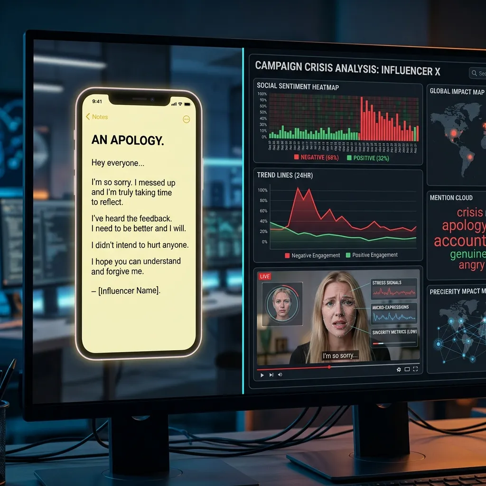

Influencer Controversies and Apologies: Real-Time Sentiment Analysis

In the hyper-connected world of 2026, the lifecycle of an influencer controversy moves at light-speed, making real-time sentiment analysis a critical skill for any digital citizen.
The "apology video"—often featuring a somber tone, no makeup, and a specific "Notes app" screenshot—has become a staple of modern internet culture. However, simply watching the apology is no longer enough to understand the full narrative. To truly grasp the "public verdict," you must be able to monitor the diverse information sources as they happen. From the original controversy-breaking news to the reaction of influential "commentary" channels and the raw data from social media trending topics, the story is always multidimensional. YoutubeMulti offers the ideal platform to build a "Reputation Surveillance Grid," ensuring you stay ahead of the next viral apology cycle.
The Anatomy of a Digital Scandal: How Viral News Breaks
A typical influencer scandal in 2026 often begins with a single, high-stakes allegation on X (Twitter) or Reddit. This initial spark can quickly grow into a massive inferno as major commentary channels (like those in the "Konopski" or "SunnyV2" ecosystems) pick up the story and add their own investigative data. The sheer speed of this transition—from individual claim to nationwide controversy—is one of the most significant changes in modern media. For the person at the center of the storm, the "Information Gap" before their official response is a period of pure reputation volatility.
Using YoutubeMulti, you can create a personal "Controversy Monitoring Ops Center." Dedicate the primary tile to the initial breaking-news report, while simultaneously keeping an eye on secondary feeds from investigative bloggers and the latest social media pulse. This side-by-side comparison allows you to spot discrepancies in reporting and see how the community is interpreting the same "leaked" information. Total situational awareness is the key to identifying the real facts in a crowded, often biased, news cycle. This level of transparency is vital for anyone who believes in the power of an informed digital audience.
Analyzing the "Notes App" vs. the "Sit-Down" Video: A Tactical Breakdown
When the official response finally arrives, it’s often in one of two formats: the rapid-fire "Notes app" screenshot on Instagram/X, or the lengthy, over-produced "sit-down" apology video on YouTube. Analyzing these responses requires a keen eye for "optics" and tactical communication. The "Notes app" is designed for speed and relative humble-ness, whereas the "sit-down" video is a more considered attempt to regain narrative control. To truly understand the "authenticity" of an apology, you must be able to compare it to the original allegations and the expert "body-language" analyses simultaneously.
A multi-stream surveillance setup allowing you to monitor these individual layers in real-time is an essential tool. Use one tile for the official apology video, another for the original "call-out" video, and a third for a live "body-language analysis" or legal-expert stream. This "tactical triangulation" ensures that you wait for genuine proof of remorse before forming a conclusion. For example, if a "viral claim" of insincerity emerges, you can immediately use your multi-stream setup to cross-reference it with the original source and see what the expert observers are saying. This "digital verification" is the only shield against the modern art of deceptive public relations.
The Influence of Commentary Channels: Shaping the Public Verdict
One of the most valuable aspects of modern influencer controversies is the diversity of "perspective." While the primary parties provides their version of events, the most interesting and often most accurate insights come from independent "commentary" channels and investigative YouTubers. These creators often explore the technical and situational nuances that a 60-second social media clip simply cannot cover. However, the challenge has always been balancing the "official word" with the "expert critiques."
YoutubeMulti allows you to build a "Commentary Pulse Grid." Tile 1 for the original apology. Tile 2 for a live technical analysis (TA) from an investigative creator who is cross-referencing timeline data and checking facts. Tile 3 for a live social media feed (like the creator's name on X or Reddit) tracking the most recent posts and comments. Tile 4 for a live reaction from a reputable "general-news" portal (if the story has reached the mainstream press). This "360-degree view" provides a level of sentiment intelligence that helps you see the "second-order" consequences of a controversy before they become obvious to the general public. This is how you catch the "hidden truth" that defines a creator's legacy.
Monitoring the Fallout with YoutubeMulti: The Reputation Dashboard
A major influencer controversy is a high-information, high-energy event. Between the sensationalist titles, the clickbait thumbnails, and the thousands of conflicting opinions, there is too much noise for a single screen. YoutubeMulti allows you to build a professional-grade "Strategic Reputation Ops Center" (SROC) for personal or professional monitoring.
Setting Up Your Controversy Verification Grid
- Tile 1: The Apology: A high-definition, primary stream of the official response video.
- Tile 2: Original Allegation: The original "breaking" video or post for direct reference and cross-analysis.
- Tile 3: Professional Commentary: A feed from a reputable investigative creator or "body-language" analyst for a baseline narrative.
- Tile 4: Live Social Sentiment: A live feed from X (formerly Twitter) or Reddit, tracking the most recent posts and hashtags related to the scandal.
- Tile 5: Institutional Perspective: Monitor the latest updates from official news sites or professional associations to see if the story has reached the "mainstream" press.
The Future of Accountability: Ethical Reporting and Digital Empathy
As we look toward 2027 and beyond, the future of digital accountability is undeniably data-driven and highly transparent. We are moving toward a world where every viewer has access to the same information as a professional publicist. Future dashboards will likely include built-in AI "sincerity analysis," real-time "apology templates" comparisons, and seamless integration with global reputation-integrity maps. YoutubeMulti is already providing the foundation for this high-tech future, allowing you to build your own bespoke "strategic monitoring" interface today.
The era of the "passive consumer" is evolving into the era of the "connected strategist." Whether you are looking to protect the integrity of your own favorite creators or capitalize on the next major market shift, having total situational awareness is your greatest asset. The influencer world moves fast, and with a multi-stream surveillance setup, you ensure that you are never caught or influenced by the next "breaking" viral trend. The future of digital discourse depends on the clarity of the information we consume.
Conclusion: The Necessity of Critical Sentiment Analysis
The 2026 world of influencer controversies is a multidimensional puzzle of optics, truth, and viral sentiment. It is no longer enough to just "follow" the drama—you must monitor it as it breathes. By utilizing advanced tools like YoutubeMulti, you can ensure that you are always at the forefront of the reputation intelligence curve. Don't just watch the apology—monitor the charts, analyze the strategies, and experience the truth behind the viral headlines in real-time. The era of total digital awareness is here.